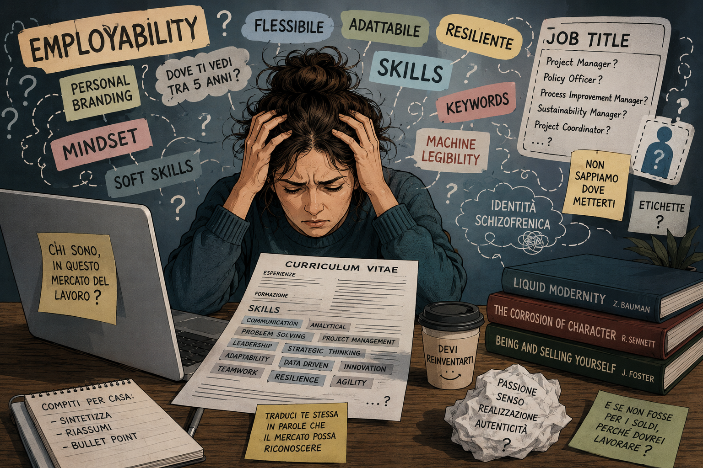

But What Am I in This Labour Market?

22 August 2026
Personal branding and the schizophrenic identity of the modern worker.
This is a little sociological reflection, disguised as a short story, about looking for work in 2026. It stems from observing, all around me, many examples of people whose employment contracts expire, who lose their jobs, or who look for work after parental leave. And before you ask: no, this is not a true story. But it is plausible. It could happen to me, or to you, or to a friend of yours…
Looking for a job makes me drift towards philosophical-existential questions, such as: but what am I in this labour market? This morning I spoke to Human Resources. They called me in to tell me that I should do additional training, also known as professional development. I am already doing it, but since they are not quite sure what kind of training I should be doing, they are giving me a coach.
And so here I am, entering the ninth circle of coaching hell, inhabited by these modern gurus who can’t actually do shit but know how to present it nicely using English buzzwords.
The paradox is that this morning’s situation already contains an answer to my existential question. What am I, in this labour market?
“We don’t know. But you should do some additional training. And since we don’t know which kind, we’re giving you a coach.”
It is almost a performance art piece.
Anyway, I meet the coach and, as a first step, I am informed that I need to understand that I may not have an employability problem. I might have a translatability problem.
While I try to work out what that means, I take a sip of water to buy myself some time. But he ploughs on enthusiastically, explaining that we need to optimise “an ability to move from technical content towards coordination, strategy, policy and communication without losing the scientific substance”.
Hmm. Cute.
The problem is that the labour market loves boxes: Project Manager. Project Leader. Sustainability Manager. Process Improvement Manager. Policy Officer. Project Coordinator.
And apparently I am some kind of creature that is biologically incompatible with LinkedIn’s drop-down menu, because we don’t know where to put me.
I shift uncomfortably in my chair and take another sip of water. The coach carries on.
“…In fact, look at the job openings you’ve analysed... you’re not simply looking for ‘another job’. You’re looking for a professional category in which your profile finally makes sense. And this, in my opinion, is where coaching could be useful… not because you need a guru to teach you how to ‘reinvent yourself’, but because it could be a tool to help you do something very concrete: give a marketable name to what you already know how to do.”
I, however, enter coaching with a certain degree of methodological scepticism.
If the coach starts with: “Where do you see yourself in five years?”, I might experience a little Vietnam flashback (a joking way of saying that this situation makes me relive a traumatic experience I have already been through).
And there it is.
Coach: “Where do you see yourself in five years?”
Me: staring into the void.
Music from Apocalypse Now.
I think of all the times I have been asked to define my “professional journey”, my “personal brand”, my “core values” and, above all, the legendary “where do you see yourself in five years?”, when all I really want is for someone to say: “Good. You know how to do this, we need it, come and do it.”
I sigh. “I don’t know,” I reply. “I saw myself here, I had a permanent job… but now I have to become something else.”
He does not lose a single gram of his enthusiasm.
“But you have to look at things from another perspective! Perhaps the issue here isn’t: ‘I have to become something else’. It is more likely: ‘I have to become more easily recognisable as something the market already knows how to buy’. Which is very different.”
Hmm, okay. Once again I buy myself some time, letting my gaze wander beyond the window, towards the car park. It is raining. I haven’t understood a fucking thing.
Frankly, it is also quite an interesting philosophical question: in the labour market, you are not paid for everything you are capable of doing; you are paid for what an organisation can recognise, name and buy. This does not exactly help me, but anyway, my next task is not necessarily to reinvent myself. It might simply be to package a little better the multifaceted creature that I am.
“Let’s see how we can make your skills more marketable…”, says the coach, picking up my CV and going through it with almost manic attention. “Let’s find a way to define your profile so that it becomes more employable. You have many transferable skills that can be repurposed, reoriented…”
I watch the rain beating against the window panes and think of Zygmunt Bauman: Liquid Modernity: Work, Consumerism and the New Poor. His idea, simplifying somewhat, is that in “liquid” modernity, professional identities become less stable: you are no longer simply a profession for your entire life. You have to continually demonstrate that you are adaptable, mobile and updatable.
The coach keeps talking, with great conviction: “You see, it is about constructing a coherent story around your CV, making your abilities recognisable and marketable… A little personal branding, basically.”
Personal branding makes me feel a certain acid reflux rising up my oesophagus. To mask it, I drink some more water; at this rate, I will have to go to the toilet before the end of the session.
So, I think, one could also bring in Richard Sennett: The Corrosion of Character. Sennett studies how flexible capitalism transforms people’s relationship with work, careers and, above all, with their own identity. The problem is: how do you construct a coherent story about yourself if the system keeps asking you to change?
Once upon a time, it seems to me, a worker had a straightforward path: I learned, I became an expert, I became senior. Today, instead: I learned, I have to keep up to date, I have to retrain, I have to be flexible, I have to reinvent myself, I have to do personal branding, I have to demonstrate resilience because they’re throwing me out due to corporate restructuring.
And the question “Who am I professionally?” becomes: “How is what I know how to do transformed into a recognisable and marketable professional identity?”
A few months ago (March 2026), a sociology article was published entitled “Being and selling yourself: Unemployment, employability and the limits of identity regulation”, by John Foster. The central question is: how far can the labour market reasonably ask us to transform ourselves in order to be marketable? The article analyses the idea that employability pushes people to “work on themselves” so that their identity becomes marketable in the labour market.
So, to my question from this morning: “But what am I, in this labour market?”, the sociological answer might be: You have become an object that must continually make itself marketable.
The coach puts down my CV, raises one eyebrow, and comes out with: “The skills are there. Have you ever tried to make yourself more employable?”
There it is. I knew it. But what the fuck do I know about how to become more employable?
He sees my lost expression and suggests: “By using the right keywords…”
I ask: “But how do I use the right keywords for the algorithms? Like, I look for jobs on LinkedIn and I don’t fit into any of the words. I have to take courses to put more keywords on my profile, but nobody knows which ones. As you say, it’s a problem of labels…”
The coach looks at me somewhat disapprovingly; I must have wandered off the trajectory of his world of enthusiastic English buzzwords.
“What do you mean?”, he asks, frowning.
“You talk about employability,” I reply. “But what if, before even being chosen, a person has to transform themselves into a string of words that the algorithm is capable of recognising?”
This is a question that has been going around in my head for weeks. The problem is no longer simply human employability, but machine legibility.[1]
Translation: candidates think they have to learn to speak the language of the algorithm, but they do not necessarily really know how it works. So a kind of ridiculous dance emerges: Add more keywords. Use the title of the vacancy. Add skills. Take this course because then this keyword will appear.
Foster talks about identity regulation: the market asks you to transform your identity. But here I see another phenomenon: identity standardization. It is no longer enough to construct a professional identity. You have to construct one that can be read by the digital infrastructures of the labour market.
And so the initial question, “What am I in this labour market?”, can be reformulated as: “Who am I professionally when my identity has to be translated into categories that a machine can recognise?”
This is no longer simply the sociology of coaching. It is an intersection between the sociology of work, the digitalisation of recruitment, algorithmic management, skills classification and the construction of professional identity.
What a headache.
But I don’t want to tell the coach. I wouldn’t want to shatter the enthusiasm in his eyes when he talks to me about employability, skills and branding. Indeed, he happily points at my CV and replies: “A string of words that the algorithm is capable of recognising? But that is exactly what we are doing: building your profile by identifying the keywords that are best suited to your personal branding!!!”, he says, with a thirty-two-toothed grin.
Of course, this work is probably necessary.
But it is sociologically interesting that it is necessary.
Today, someone looking for a job finds themselves caught between algorithms they do not really understand how to navigate, definitions and boxes bordering on “almost as if it were Antani” (this is a quote from a Monicelli's movie, but I guess only Italian readers will grasp it), the need for lateral skills certified by six thousand mini-courses, and the intervention of coaches who do not know how to define you but charge you to tell you so; and probably without any of this increasing your “employability” by a single iota.
Meanwhile, you have to be flexible, competent, with lots of experience (but not too much, because they certainly don’t have the budget to pay for a senior profile), cheerful, sociable, enthusiastic about little parties with your colleagues because nobody wants a grumpy bear, you have to say mindset and synergy at least four times a day and, obviously, you have to be enthusiastic about working.
Because when asked What do you want to do? What if money were no object? [2] a sane person might answer: “But if it weren’t for the money, why the fuck would I work?”
Because there is a huge cultural assumption hidden in that sentence: that work should be a form of self-fulfilment. Not simply something you do because it allows you to live.
And so, when I say “sane”, it is not a joke at all. There is a real psychological tension in all of this. If work is not simply a means of earning an income, but has to be the authentic expression of your self, then every professional dissatisfaction becomes an identity crisis.
Haven’t found the right job? Maybe you don’t know yourself well enough.
Can’t find a job? Maybe you need to work on your mindset.
Don’t know which professional development courses to take? You need to discover your direction.
You’re tired? You need to develop resilience.
You’re 50 and you’ve lost your job? You need to reinvent yourself.
The system is wonderfully elegant: responsibility always comes back to the individual. And I have the impression that it is eating away at my sanity.
“That’s enough for today,” says the coach. Thank God, I can go to the toilet, I think. But he has to give me homework: “For next time, try to summarise what you have learned from this meeting,” he says. “Just a few bullet points. Try to summarise what you think we need to do to increase your employability.”
So I leave the meeting with the coach thoroughly confused and go to the toilet, then decide to have a coffee. There is a café across the road. I sit down, take out my notebook and think. What have I learned?
The contemporary labour market celebrates the individual as unique, authentic, creative, capable of reinventing themselves. You have to find your vocation, know yourself, understand what you really want, build your personal brand. But at the same time you have to be classifiable. You have to fit into a job title, a skill, a keyword, a category.
Obviously, an interdisciplinary career, which in real life can be a great asset, becomes difficult to represent in a system that thinks in keywords: it is no longer enough to know how to do something. You also have to know what what you know how to do is called according to the current taxonomy.
In my notebook, I write:
1. Find your label.
Then, because the taxonomy is a mess, recruiters, career coaches, courses, certifications, personal branding and other intermediaries of professional legibility enter the picture: because if you do not know how to translate yourself into the language of the market, someone will offer to help you.
And I do not even want to say that they are all useless: some recruiters do real work, some coaches can be good, some training courses are genuinely valuable.
But basically you have to pay people and tools to help you transform “I’ve done these things for fifteen years” into: “I have these 17 skills.” And then: “I took this course to certify skill number 11.”
I write in my notebook:
2. Translate it into the right keywords
What else? I have to become a desirable candidate for the labour market. The ideal candidate must be: flexible, but with a coherent and recognisable career path; young, but with at least 10 years of experience; senior, but with junior salary expectations; specialised, but also multidisciplinary; autonomous, but a team player; professional, but informal; resilient, because work is unstable; enthusiastic, because apparently you are also supposed to enjoy the instability.
I write in my notebook:
3. Make peace with the schizophrenic identity of the modern worker
Then I draw a line through it and rephrase:
3. Make peace with the schizophrenic identity of the modern
worker
3. Do personal branding.
There. I’m learning.
[1] There is a 2025 study (Navigating Automated Hiring: Perceptions, Strategy Use, and Outcomes Among Young Job Seekers, Lena Armstrong, Danaé Metaxa) on job seekers trying to navigate automated recruitment. The authors studied 448 young job seekers and, among the strategies adopted to deal with automation, there was precisely the addition of keywords to CVs. And here comes the almost comical part: adding keywords was not associated with a significant improvement in outcomes, whereas referrals and certain socioeconomic variables were. ↩
[2] I quote from Foster’s paper: The logic of personal introspection to develop career identity is evident in the following statement made by an employability professional: What do you want to do? What if money were no object? If you find the right job for you then you’ll never work another day in your life!
Again, the assumption is that finding work is a question of being in touch with desires emanating from the self and that once these are located, navigating the job market becomes straightforward.... ↩